假设含有 n 个记录的序列为 ，其相应的关键字分别为 ，需确定 1,2,......,n 的一种排列 ，使其相应的关键字满足 （非递减或非递增）关系，即使得序列成为一个按关键字有序的序列 ，这样的操作称为排序。
在排序问题中，通常将数据元素称为记录。输入的是一个记录集合，输出的也是一个记录集合，可以将排序看成是线性表的一种操作。
排序的依据是关键字之间的大小关系，对同一个记录集合，针对不同的关键字进行排序，可以得到不同序列。
关键字 可以是记录 r 的主关键字，也可以是次关键字，甚至是若干数据项的组合。
假设 ，且在排序前的序列中 领先于 （即 ）。如果排序后 仍领先于 ，则称所用的排序方法是稳定的；反之，若可能使得排序后的序列中领先，则称所用的排序方法是不稳定的。
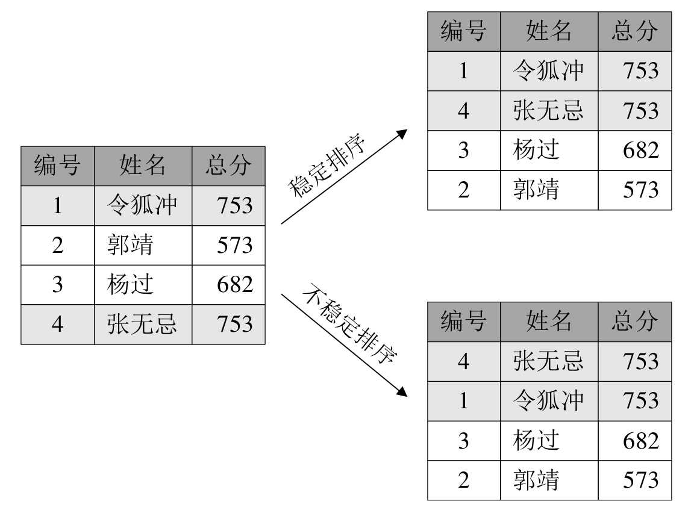
根据在排序过程中待排序的记录是否全部被放置在内存中，排序分为：内排序和外排序。
内排序是在排序整个过程中，待排序的所有记录全部被放置在内存中。外排序是由于排序的记录个数太多，不能同时放置在内存，整个排序过程需要在内外存之间多次交换数据才能进行。这里主要介绍内排序的多种方法。
对于内排序，排序算法的性能主要是受 3 个方面影响：
排序是数据处理中经常执行的一种操作，往往属于系统的核心部分，因此排序算法的时间开销是衡量其好坏的最重要的标志。在内排序中，主要进行两种操作：比较和移动。比较指关键字之间的比较，是要做排序最起码的操作。移动指记录从一个位置移动到另一个位置，移动可以通过改变记录的存储方式来予以避免。总之，高效率的内排序算法是具有尽可能少的关键字比较次数和尽可能少的记录移动次数。
评价排序算法的另一个主要标准是执行算法所需要的辅助存储空间。辅助存储空间是除了存放待排序所占用的存储空间之外，执行算法所需要的其他存储空间。
注意这里指的是算法本身的复杂度，而不是指算法的时间复杂度。算法过于复杂会影响排序的性能。
根据排序过程中借助的主要操作，我们把内排序分为：插入排序、交换排序、选择排序和归并排序，可以说，这些都是比较成熟的排序技术，已经被广泛地应用于许许多多的程序语言或数据库当中，甚至它们都已经封装了关于排序算法的实现代码。 因此，我们学习这些排序算法的目的更多并不是为了去在现实中编程排序算法，而是通过学习来提高我们编写算法的能力，以便于去解决更多复杂和灵活的应用性问题。
本章一共要讲解七种排序的算法，按照算法的复杂度分为两大类，冒泡排序、简单选择排序和直接插入排序属于简单算法，而希尔排序、堆排序、归并排序、快速排序属于改进算法。后面我们将依次讲解。
为了讲清楚排序算法的代码，先提供一个用于排序用的顺序表结构，此结构也将用于之后我们要讲的所有排序算法。
/* 用于要排序数组个数最大值，可根据需要修改 */ #define MAXSIZE 10 typedef struct { /* 用于存储要排序数组，r[0]用作哨兵或临时变量 */ int r[MAXSIZE + 1]; /* 用于记录顺序表的长度 */ int length; } SqList;
另外，由于排序最最常用到的操作是数组两元素的交换，所以将它写成函数，后面会大量用到。
/* 交换L中数组r的下标为i和j的值 */ void swap(SqList *L, int i, int j) { int temp = L->r[i]; L->r[i] = L->r[j]; L->r[j] = temp; }
冒泡排序（Bubble Sort）一种交换排序，基本思想是：两两比较相邻记录的关键字，如果反序则交换，直到没有反序的记录为止。冒泡的实现在细节上可以有很多种变化，这里介绍 3 种。
先看比较容易理解的一段：
/* 对顺序表L作交换排序(冒泡排序初级版) */ void BubbleSort0(SqList *L) { int i, j; for (i = 1; i < L->length; i++) { for (j = i + 1; j <= L->length; j++) { if (L->r[i] > L->r[j]) { /* 交换L->r[i]与L->r[j]的值 */ swap(L, i, j); } } } }
上述代码严格意义上来说不算标准的冒泡排序算法，因为它不满足“两两比较相邻记录”的冒泡排序思想，它更应该是最最简单的交换排序而已。它的思路是让每一个关键字，都和它后面的每一个关键字比较，如果大则交换，这样第一位置的关键字在一次循环后一定变成最小值。如下图所示；假设待排序的关键字序列是{9,1,5,8,3,7,4,6,2}。
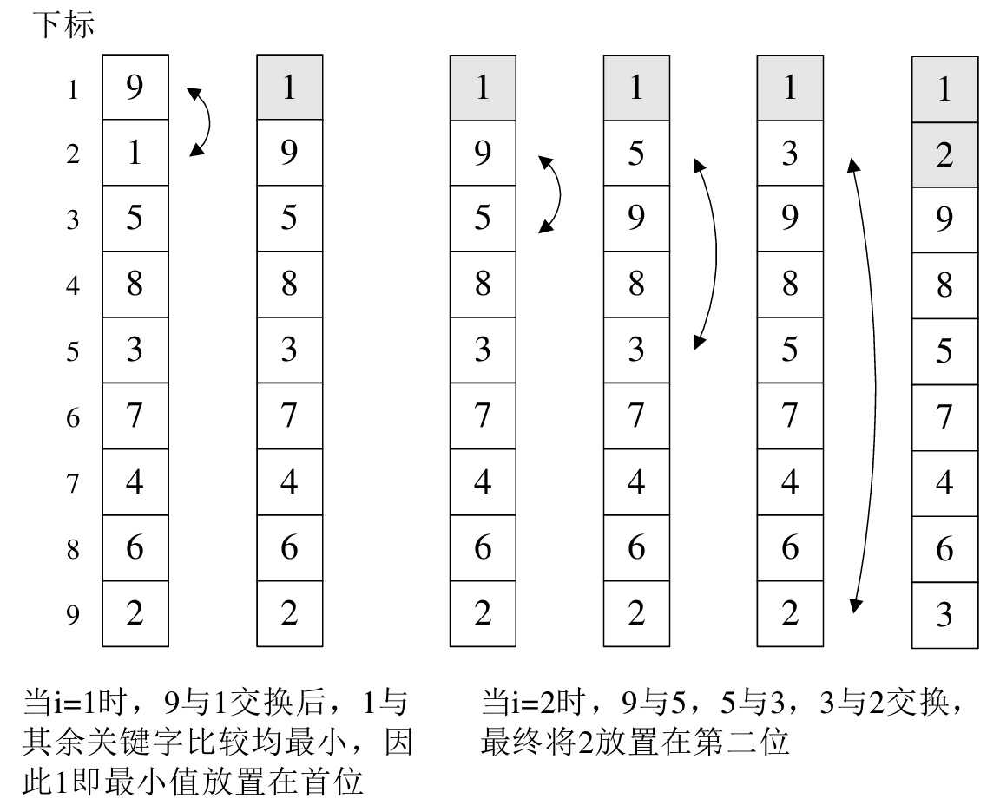
该算法效率非常低。
正宗的冒泡排序算法：
/* 对顺序表L作冒泡排序 */ void BubbleSort(SqList *L) { int i, j; for (i = 1; i < L->length; i++) { /* 注意j是从后往前循环 */ for (j = L->length - 1; j >= i;j--) { /* 若前者大于后者(注意这里与上一算法差异) */ if (L->r[j] > L->r[j + 1]) { /* 交换L->r[j]与L->r[j+1]的值 */ swap(L, j, j + 1); } } } }
当 i=1,除了将关键字 1 放到第一的位置，还将关键字 2 从第九位置提到了第三的位置：
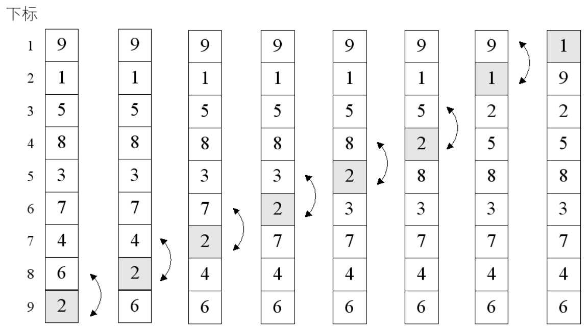
当 i=2 时，变量 j 由 8 反向循环到 2，逐个比较，在将关键字 2 交换到第二位置的同时，也将关键字 4 和 3 有所提升：
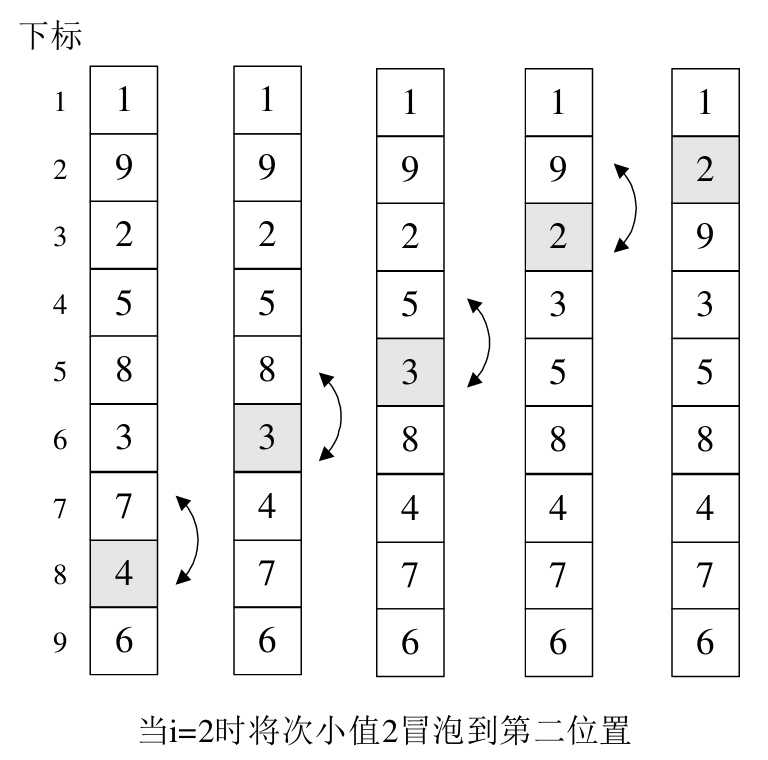
更多内容详见书籍。
更多内容详见书籍。
最好的情况：要排序的表本身就是有序的，最后改进的代码是 n-1 次的比较，没有数据交换，时间复杂度为 。
最坏的情况：待排序表是逆序的情况，此时需要比较
次，并作等数量级的记录移动。
总时间复杂度为 。
选择排序的基本思想是每一趟在 个记录中选取关键词最小的记录作为有序序列的第 个记录。
简单选择排序法（Simple Selection Sort）是通过 次关键字间的比较，从 个记录中选出关键字最小的记录，并和第 个记录交换之。
/* 对顺序表L作简单选择排序 */ void SelectSort(SqList *L) { int i, j, min; for (i = 1; i < L->length; i++) { /* 将当前下标定义为最小值下标 */ min = i; /* 循环之后的数据 */ for (j = i + 1; j <= L->length; j++) { /* 如果有小于当前最小值的关键字 */ if (L->r[min] > L->r[j]) /* 将此关键字的下标赋值给min */ min = j; } /* 若min不等于i，说明找到最小值，交换 */ if (i != min) /* 交换L->r[i]与L->r[min]的值 */ swap(L, i, min); } }
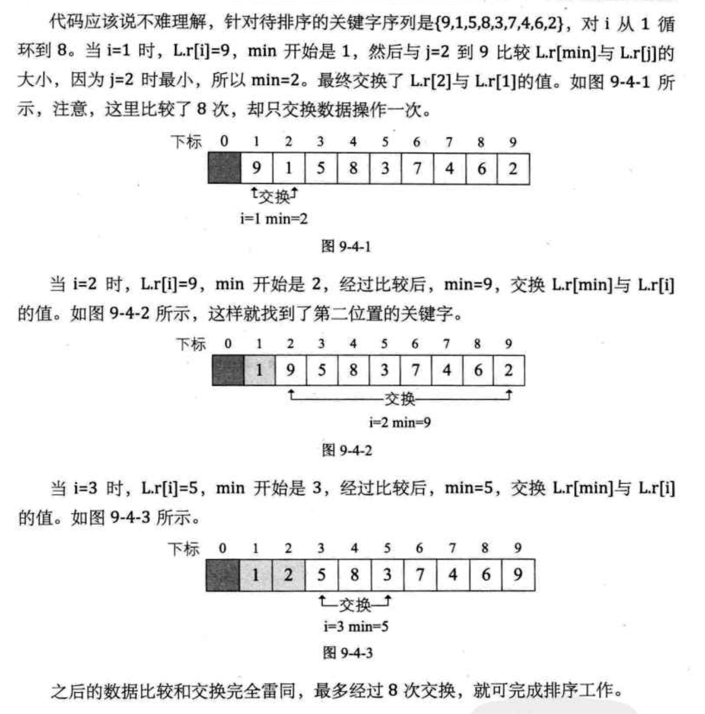
简单选择排序最大的特点就是交换移动数据次数相当少，无论最好最差的情况，其比较次数都是一样的多，第 i 趟排序需要进行 n-i 次关键字的比较，此时需要比较 次。对于交换次数，最好的时候交换为 0 次，最差的时候，也就初始降序时，交换次数为 n-1 次，基于最终的排序时间是比较与交换的次数总和，因此，总的时间复杂度依然为 。
尽管与冒泡排序同为 ，但简单选择排序的性能上还是要略优于冒泡排序。
直接插入排序（Straight Insertion Sort）的基本操作是将一个记录插入到已经排好序的有序表中，从而得到一个新的、记录数增 1 的有序表。
/* 对顺序表L作直接插入排序 */ void InsertSort(SqList *L) { int i, j; for (i = 2; i <= L->length; i++) { /* 需将L->r[i]插入有序子表 */ if (L->r[i] < L->r[i - 1]) { /* 设置哨兵 */ L->r[0] = L->r[i]; for (j = i - 1; L->r[j] > L->r[0]; j--) /* 记录后移 */ L->r[j + 1] = L->r[j]; /* 插入到正确位置 */ L->r[j + 1] = L->r[0]; } } }
更多内容（如源码分析等）详见书籍。
从空间上来看，它只需要一个记录的辅助空间，因此关键是看它的时间复杂度。
插入排序法的时间复杂度为 。同样的时间复杂度 ，直接插入排序法比冒泡和简单选择排序的性能要好。
将原本有大量记录数的记录进行分组。分割成若干个子序列，此时每个子序列待排序的记录个数比较少，然后在这些子序列内分别进行直接插入排序，当整个序列都基本有序时，再对全体记录进行一次直接插入排序。
基本有序，就是小的关键字基本在前面，大的基本在后面，不大不小的基本在中间 {2,1,3,6,4,7,5,8,9} 可以称为基本有序。{1,5,9,3,7,8,2,4,6} 的 9 在第三位，2 在倒数第三位谈不上基本有序。
跳跃分割的策略：将相距某个“增量”的记录组成一个子序列，保证在子序列内分别进行直接插入排序后得到的结果是基本有序而不是局部有序。
更多内容详见书籍。
希尔排序的关键是将相隔某个“增量”的记录组成一个子序列，实现跳跃式的移动，使得排序的效率提高。
当增量序列为 =2^{t-k+1}-1 \quad\left(0 \leq k \leq t \leq\left[\log _{2}(n+1)\right]\right)O(n^{\frac{3}{2}})O(n^{2})$。增量序列的最后一个增量值必须等于1。由于记录是跳跃式的移动，希尔排序并不是一种稳定的排序算法。
堆是具有下列性质的完全二叉树：每个结点的值都大于或等于其左右孩子结点的值，称为大顶堆；或者每个结点的值都小于或等于其左右孩子结点的值，称为小顶堆。
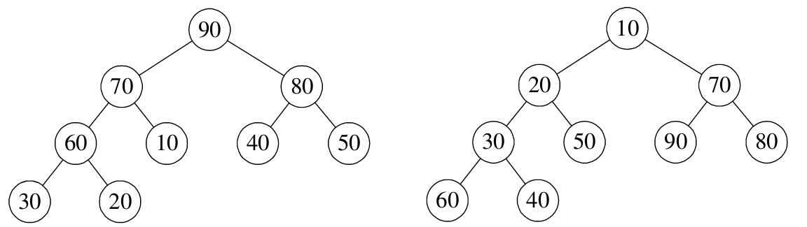
根结点一定是堆中所有结点最大（小）者。较大（小）的结点靠近根结点（不绝对，右图小顶堆中 60、40 均小于 70，但没有 70 靠近根结点）。
按照层序遍历的方式给结点从1开始编号，结点之间满足如下关系：
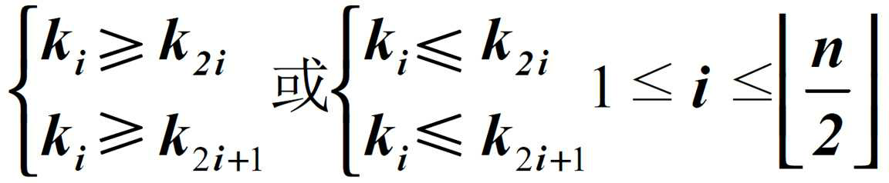
将大顶堆和小顶堆用层序遍历存入数组：
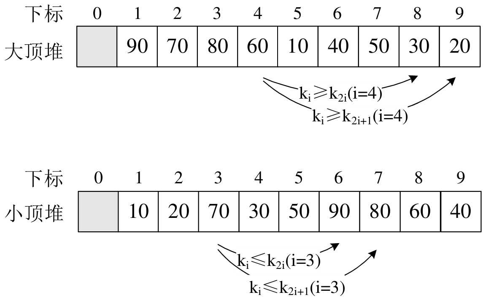
堆排序（Heap Sort）是利用堆（假设利用大顶堆）进行排序的方法。基本思想是将待排序的序列构造成一个大顶堆。此整个序列的最大值就是堆顶的根结点。将它移走（其实就是将其与堆数组的末尾元素交换，此时末尾元素就是最大值），然后将剩余的n-1个序列重新构造成一个堆，这样就会得到n个元素中的次大值。如此反复执行，便能得到一个有序序列。
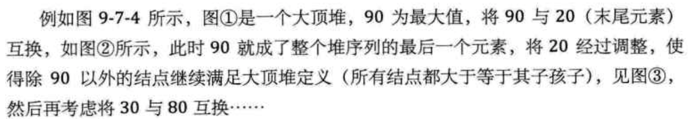
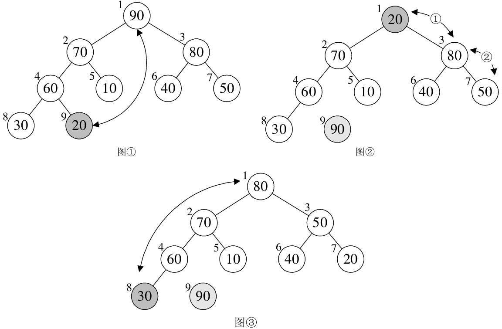
但上述实现需要解决两个问题：
要解释清楚，先看代码：
/* 对顺序表L进行堆排序 */ void HeapSort(SqList *L) { int i; /* 把L中的r构建成一个大顶堆 */ for (i = L->length / 2; i > 0; i--) HeapAdjust(L, i, L->length); for (i = L->length; i > 1; i--) { /* 将堆顶记录和当前未经排序子序列的最后一个记录交换 */ swap(L, 1, i); /* 将L->r[1..i-1]重新调整为大顶堆 */ HeapAdjust(L, 1, i - 1); } }
从代码中也可以看出，整个排序过程分为两个for循环。第一个循环要完成的就是将现在的待排序序列构建成一个大顶堆。第二个循环要完成的就是逐步将每个最大值的根结点与末尾元素交换，并且再调整其成为大顶堆。
更多内容详见书籍。
堆排序的运行时间主要是消耗在初始构建堆和在重建堆时的反复筛选上。
构建堆：因为是完全二叉树从最下层最右边的非终端结点开始构建，将它与其孩子进行比较和若有必要的互换，对于每个非终端结点，最多进行两次比较和互换操作，时间复杂度为 。
正式排序：第 i 次取堆顶记录重建堆需要用 的时间（完全二叉树的某个结点到根结点的距离为 ，并且需要取n-1n−1次堆顶记录，因此重建堆的时间复杂度为 。这在性能上显然要远远好过于冒泡、简单选择、直接插入的 的时间复杂度了。
总体堆排序的时间复杂度为 。
空间复杂度上只有一个用来交换的暂存单元，也非常的不错。不过由于记录的比较与交换是跳跃式进行，堆排序也是一种不稳定的排序方法。
由于初始构建堆所需的比较次数较多，不适合待排序序列个数较少的情况。
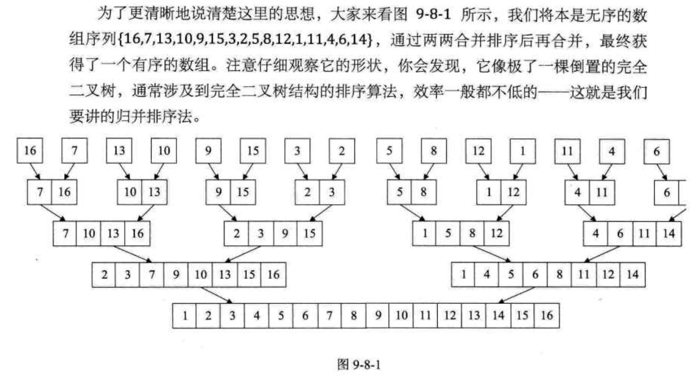
归并：将两个或两个以上的有序表组合成一个新的有序表。
假设初始序列含有 n 个记录，看成是 n 个有序的子序列，每个子序列的长度为 1，然后两两归并，得到 （ 表示不小于 x 的最小整数）个长度为 2 或 1 的有序子序列；再两两归并，如此重复，直至得到一个长度为 n 的有序序列为止，这种排序方法称为 2路归并排序。
更多内容详见书籍。
总的时间复杂度为 ，这是归并排序算法中最好、最坏、平均的时间性能。
由于归并排序在归并过程中需要与原始记录序列同样数量的存储空间 n 存放归并结果以及递归时深度为 的栈空间，因此空间复杂度为 。
归并排序是一种稳定的排序算法。
也就是说，归并排序是一种比较占用内存，但效率高且稳定的算法。
更多内容详见书籍。
更多内容详见书籍。
希尔排序相当于直接插入排序的升级，同属于插入排序类，堆排序相当于简单选择排序的升级，同属于选择排序类。快速排序是最慢的冒泡排序的升级，属于交换排序类。它是通过不断比较和移动交换来实现排序的，只不过它的实现增大了记录的比较和移动的距离，将关键字较大的记录从前面直接移动到后面，关键字较小的记录从后面直接移动到前面，减少了总的比较次数和移动交换次数。
快速排序（Quick Sort）的基本思想是：通过一趟排序将待排记录分割成独立的两部分，其中一部分记录的关键字均比另一部分记录的关键字小，分别对这两部分记录继续排序，达到整个序列有序。
更多内容详见书籍。
更多内容详见书籍。
排序稳定对于某些特殊需求来说是至关重要的，因此在排序算法中，需要关注此算法的稳定性如何。
排序记录是否全部被放置在内存中，将排序分为内排序与外排序两种，外排序需要在内外存之间多次交换数据才能进行。
根据排序过程中借助的主要操作，我们将内排序分为：插入排序、交换排序、选择排序和归并排序四类。
7 种算法的各种指标对比：
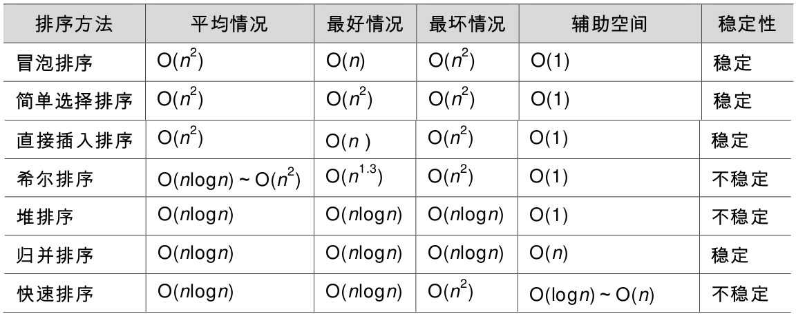
从算法的简单性，将 7 种算法分为两类：
平均情况：最后3种改进算法要胜过希尔排序，并远远胜过前3种简单算法。
最好情况：冒泡和直接插入排序要更胜一筹。
最坏情况：堆排序与归并排序强过快速排序以及其他简单排序
执行算法的软件所处的环境非常在乎内存使用量的多少时，归并排序和快速排序不是一个较好的决策。
非常在乎排序稳定性的应用中，归并排序是个好算法。
从待排序记录的个数上来说，待排序的个数 n 越小，采用简单排序方法越合适。反之，n 越大，采用改进排序方法越合适。